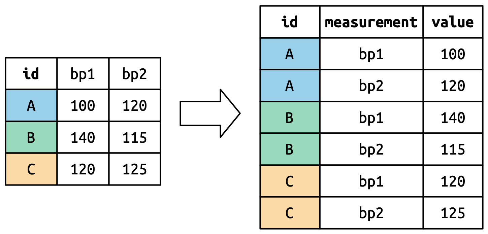

install.packages("tidyverse") # Do just once
library(tidyverse) # Do at the start of every session02: tidy data and tidyverse
STA35B: Statistical Data Science 2
Akira Horiguchi
tidyverse
tidyverse approach to data manipulation
Why use tidyverse over base R or data.table or other packages?
The tidyverse is an opinionated collection of R packages designed for data science. All packages share an underlying design philosophy, grammar, and data structures. — https://www.tidyverse.org/
- Consistent syntax.
- Many people work full-time (and get paid!) to make new packages, add new functionality, etc.
- In contrast, many other packages are created/maintained/updated by researchers who work on this part-time.
We will primarily use tidyverse solutions, but it is always good to know base R.
Reminder about packages
- Packages are things we load using
library(). - If you haven’t installed a package
PACKAGENAMEbefore, you’ll get an error. - To install a package:
install.packages("PACKAGENAME"). - To load a package:
library(PACKAGENAME). - For example:
Load example dataset
# A tibble: 336,776 × 19
year month day dep_time sched_dep_time dep_delay arr_time sched_arr_time
<int> <int> <int> <int> <int> <dbl> <int> <int>
1 2013 1 1 517 515 2 830 819
2 2013 1 1 533 529 4 850 830
3 2013 1 1 542 540 2 923 850
4 2013 1 1 544 545 -1 1004 1022
5 2013 1 1 554 600 -6 812 837
6 2013 1 1 554 558 -4 740 728
7 2013 1 1 555 600 -5 913 854
8 2013 1 1 557 600 -3 709 723
9 2013 1 1 557 600 -3 838 846
10 2013 1 1 558 600 -2 753 745
# ℹ 336,766 more rows
# ℹ 11 more variables: arr_delay <dbl>, carrier <chr>, flight <int>,
# tailnum <chr>, origin <chr>, dest <chr>, air_time <dbl>, distance <dbl>,
# hour <dbl>, minute <dbl>, time_hour <dttm>Piping: %>% and |>
The operator %>% (requires the magrittr package) allow you to write operations sequentially.
Can instead pipe an output into the (first) argument of another function.
Can also use |>, which is included in R 4.1.0 (no need to load another package)
Piping: %>% and |>
Why pipe? Can be easier to read and understand.
vs
We will see more complex examples of this shortly.
Subsetting a data frame
Subset based on data values (rather than row/column indices)
- Column:
select() - Row:
filter()
The select() function
Returns a tibble with the columns specified, in order specified.
[1] "time_hour" "origin" "dest" "air_time" "distance" [1] "distance" "dest" "time_hour" "origin" "air_time" [1] "distance" "dest" "time_hour" "origin" "air_time" Helper functions for select()
starts_with("abc"): matches names that begin with “abc”.ends_with("xyz"): matches names that end with “xyz”.contains("ijk"): matches names that contain “ijk”.num_range("x", 1:3): matches x1, x2 and x3.
Helper functions for select(): num_range()
[1] "artist" "track" "date.entered" "wk1" "wk2"
[6] "wk3" "wk4" "wk5" "wk6" "wk7"
[11] "wk8" "wk9" "wk10" "wk11" "wk12"
[16] "wk13" "wk14" "wk15" "wk16" "wk17"
[21] "wk18" "wk19" "wk20" "wk21" "wk22"
[26] "wk23" "wk24" "wk25" "wk26" "wk27"
[31] "wk28" "wk29" "wk30" "wk31" "wk32"
[36] "wk33" "wk34" "wk35" "wk36" "wk37"
[41] "wk38" "wk39" "wk40" "wk41" "wk42"
[46] "wk43" "wk44" "wk45" "wk46" "wk47"
[51] "wk48" "wk49" "wk50" "wk51" "wk52"
[56] "wk53" "wk54" "wk55" "wk56" "wk57"
[61] "wk58" "wk59" "wk60" "wk61" "wk62"
[66] "wk63" "wk64" "wk65" "wk66" "wk67"
[71] "wk68" "wk69" "wk70" "wk71" "wk72"
[76] "wk73" "wk74" "wk75" "wk76" Helper functions for select(): num_range()
The filter() function
Example: flights on February 15
# A tibble: 954 × 19
year month day dep_time sched_dep_time dep_delay arr_time sched_arr_time
<int> <int> <int> <int> <int> <dbl> <int> <int>
1 2013 2 15 3 2358 5 503 438
2 2013 2 15 6 2115 171 48 2214
3 2013 2 15 6 2250 76 117 5
4 2013 2 15 22 2230 112 510 312
5 2013 2 15 36 2352 44 607 437
...The filter() function
Expressions can be built up using comparison operators and logical operators.
&is “and”|is “or”!is “not”%in%is a membership checker (is an object inside of a vector)>,<mean greater than, less than>=,<=mean greater than or equal to, less than or requal to==means “is equal”!=means “is not equal”
Examples of filter()
# A tibble: 2,076 × 5
time_hour origin dest air_time distance
<dttm> <chr> <chr> <dbl> <dbl>
1 2013-01-01 09:00:00 LGA PHL 32 96
2 2013-01-01 13:00:00 EWR BDL 25 116
3 2013-01-01 16:00:00 JFK PHL 35 94
...Spot the error?
Spot the error?
Equivalent ways to filter on multiple conditions
# A tibble: 493 × 5
time_hour origin dest air_time distance
<dttm> <chr> <chr> <dbl> <dbl>
1 2013-01-01 13:00:00 EWR BDL 25 116
2 2013-01-01 22:00:00 EWR BDL 24 116
...Inspect a data frame
count()
If you want to count occurrences of different pairs/“tuples” of values across columns:
e.g. for flights, want to count how many flights by origin:
count()
To count occurrences of different pairs/“tuples” of values across columns:
e.g. for flights, want to count how many flights by origin:
Summary statistics and missing data
Common summary statistics of interest in data:
- Mean (
mean()) - Min/max (
min(),max()) - Median (
median()) - Standard deviation / variance (
sd(),var())
R denotes missing data using NA. Typically, if you compute a function of a vector with NAs, it will return NA, unless you put na.rm=TRUE.
summarize()
If you want to compute summary statistics of dataframe, use summarize().
group_by() and summarise()
To compute summary statistics per category, use group_by() first.
mutate()
mutate() adds new columns to the data frame using functions of extant columns.
# A tibble: 336,776 × 7
origin dest air_time distance hours mi_per_hour km_per_hour
<chr> <chr> <dbl> <dbl> <dbl> <dbl> <dbl>
1 EWR IAH 227 1400 3.78 370. 596.
2 LGA IAH 227 1416 3.78 374. 603.
3 JFK MIA 160 1089 2.67 408. 657.
4 JFK BQN 183 1576 3.05 517. 832.
5 LGA ATL 116 762 1.93 394. 635.
6 EWR ORD 150 719 2.5 288. 463.
...mi_per_hour uses hours, which was created within the same mutate() call.
Reshaping a data frame
Tidy data
Multiple equivalent ways of organizing data into a dataframe.
table1
#> # A tibble: 6 × 4
#> country year cases population
#> <chr> <dbl> <dbl> <dbl>
#> 1 Afghanistan 1999 745 19987071
#> 2 Afghanistan 2000 2666 20595360
#> 3 Brazil 1999 37737 172006362
#> 4 Brazil 2000 80488 174504898
#> 5 China 1999 212258 1272915272
#> 6 China 2000 213766 1280428583
table2
#> # A tibble: 12 × 4
#> country year type count
#> <chr> <dbl> <chr> <dbl>
#> 1 Afghanistan 1999 cases 745
#> 2 Afghanistan 1999 population 19987071
#> 3 Afghanistan 2000 cases 2666
#> 4 Afghanistan 2000 population 20595360
#> 5 Brazil 1999 cases 37737
#> 6 Brazil 1999 population 172006362
#> # ℹ 6 more rowstable1 is tidy - easier to work with using tidyverse.
Tidy data
- Each variable is a column; each column is a variable.
- Each observation is a row; each row is an observation.
- Each value is a cell; each cell is a single value.

Tidy data
Why tidy data?
- Consistency - uniform format makes collaboration easier
- Vectorization - R commands often operate on vectors of data, best for each column to be a vector of data
Tidying data
Unfortunately, most real-world datasets you encounter are NOT tidy.
- A large part of “data scientist work” consists in tidying data (“cleaning data”).
The next two weeks will primarily be about how to tidy/rearrange data so that you can do data analysis and visualization properly.
# A tibble: 317 × 79
artist track date.entered wk1 wk2 wk3 wk4 wk5 wk6 wk7 wk8
<chr> <chr> <date> <dbl> <dbl> <dbl> <dbl> <dbl> <dbl> <dbl> <dbl>
1 2 Pac Baby… 2000-02-26 87 82 72 77 87 94 99 NA
2 2Ge+her The … 2000-09-02 91 87 92 NA NA NA NA NA
3 3 Doors D… Kryp… 2000-04-08 81 70 68 67 66 57 54 53
4 3 Doors D… Loser 2000-10-21 76 76 72 69 67 65 55 59
5 504 Boyz Wobb… 2000-04-15 57 34 25 17 17 31 36 49
6 98^0 Give… 2000-08-19 51 39 34 26 26 19 2 2
7 A*Teens Danc… 2000-07-08 97 97 96 95 100 NA NA NA
...Lengthening data with pivot_longer()
# A tibble: 317 × 79
artist track date.entered wk1 wk2 wk3 wk4 wk5 wk6 wk7 wk8
<chr> <chr> <date> <dbl> <dbl> <dbl> <dbl> <dbl> <dbl> <dbl> <dbl>
1 2 Pac Baby… 2000-02-26 87 82 72 77 87 94 99 NA
2 2Ge+her The … 2000-09-02 91 87 92 NA NA NA NA NA
3 3 Doors D… Kryp… 2000-04-08 81 70 68 67 66 57 54 53
...- Each observation is a song.
- First three columns (
artist,track,date.entered) describe the song. - The next 76 columns (
wk1,wk2, …,wk76) say song’s rank in each week. - But week should be a variable.
- Each observation should be
artist-track-date.entered-week-rank. - To make it tidy, each observation should be a row. Need to make the dataframe longer.
Lengthening data with pivot_longer()
# A tibble: 24,092 × 5
artist track date.entered week rank
<chr> <chr> <date> <chr> <dbl>
1 2 Pac Baby Don't Cry (Keep... 2000-02-26 wk1 87
2 2 Pac Baby Don't Cry (Keep... 2000-02-26 wk2 82
3 2 Pac Baby Don't Cry (Keep... 2000-02-26 wk3 72
4 2 Pac Baby Don't Cry (Keep... 2000-02-26 wk4 77
...- “week” and “rank” do not appear as column names in billboard, so need quotes
Lengthening data with pivot_longer()
# A tibble: 24,092 × 5
artist track date.entered week rank
<chr> <chr> <date> <chr> <dbl>
1 2 Pac Baby Don't Cry (Keep... 2000-02-26 wk1 87
2 2 Pac Baby Don't Cry (Keep... 2000-02-26 wk2 82
3 2 Pac Baby Don't Cry (Keep... 2000-02-26 wk3 72
4 2 Pac Baby Don't Cry (Keep... 2000-02-26 wk4 77
...Data is now tidy, but not ideal for data analysis. Why?
weekshould ideally be a number, not a character- Can use
readr::parse_number()that extracts first number from string to fix.
Lengthening data with pivot_longer()
# A tibble: 24,092 × 5
artist track date.entered week rank
<chr> <chr> <date> <dbl> <dbl>
1 2 Pac Baby Don't Cry (Keep... 2000-02-26 1 87
2 2 Pac Baby Don't Cry (Keep... 2000-02-26 2 82
3 2 Pac Baby Don't Cry (Keep... 2000-02-26 3 72
4 2 Pac Baby Don't Cry (Keep... 2000-02-26 4 77
...Understanding pivot_longer()
Consider toy dataset: three people (A, B, C) each with two blood pressure (BP) measurements.
Understanding pivot_longer()

Columns that are already variables need to be repeated for each pivoted column.
Understanding pivot_longer()

Pivoted column names bp1,bp2 become values in a new variable "measurement", with name given by names_to. They need to be repeated for each row in the original dataset.
Understanding pivot_longer()

Cell values are values in a new variable, with name values_to, unwound row by row.
Widening data
We’ll now use pivot_wider() to widen data which is (too) long.
# A tibble: 500 × 4
org_pac_id org_nm measure_cd prf_rate
<chr> <chr> <chr> <dbl>
1 0446157747 USC CARE MEDICAL GROUP INC CAHPS_GRP_1 63
2 0446157747 USC CARE MEDICAL GROUP INC CAHPS_GRP_2 87
3 0446157747 USC CARE MEDICAL GROUP INC CAHPS_GRP_3 86
4 0446157747 USC CARE MEDICAL GROUP INC CAHPS_GRP_5 57
5 0446157747 USC CARE MEDICAL GROUP INC CAHPS_GRP_8 85
6 0446157747 USC CARE MEDICAL GROUP INC CAHPS_GRP_12 24
7 0446162697 ASSOCIATION OF UNIVERSITY PHYSICIANS CAHPS_GRP_1 59
...The basic unit studied is an organization, but it’s spread across six rows for different measurements.
Widening data
# A tibble: 95 × 8
org_pac_id org_nm CAHPS_GRP_1 CAHPS_GRP_2 CAHPS_GRP_3 CAHPS_GRP_5 CAHPS_GRP_8
<chr> <chr> <dbl> <dbl> <dbl> <dbl> <dbl>
1 0446157747 USC C… 63 87 86 57 85
2 0446162697 ASSOC… 59 85 83 63 88
3 0547164295 BEAVE… 49 NA 75 44 73
4 0749333730 CAPE … 67 84 85 65 82
5 0840104360 ALLIA… 66 87 87 64 87
6 0840109864 REX H… 73 87 84 67 91
...If you don’t supply id_cols, R assumes that all columns EXCEPT for names_from and values_from are id_cols.
Understanding pivot_wider()
Dataset where two patients (A, B), with between 2 and 3 BP measurements.
# A tibble: 2 × 4
id bp1 bp2 bp3
<chr> <dbl> <dbl> <dbl>
1 A 100 120 105
2 B 140 115 NA- There is no measurement for bp3 for B, so R puts in
NA. id_colsis empty, so R assumes that all columns EXCEPT fornames_fromandvalues_fromare id_cols.
Going from long to wide and back again
# A tibble: 5 × 3
id measurement value
<chr> <chr> <dbl>
1 A bp1 100
2 B bp1 140
3 B bp2 115
4 A bp2 120
5 A bp3 105Tidy check
# A tibble: 8 × 4
City Date Measurement Value
<chr> <chr> <chr> <dbl>
1 CityA 2024-01-01 Temperature 20
2 CityA 2024-01-01 Humidity 80
3 CityA 2024-01-02 Temperature 22
4 CityA 2024-01-02 Humidity 82
5 CityB 2024-01-01 Temperature 18
6 CityB 2024-01-01 Humidity 85
7 CityB 2024-01-02 Temperature 19
8 CityB 2024-01-02 Humidity 88- Not tidy, since each variable is not a column, e.g. temperature/humidity.
- “Tidyness” can be a bit ambiguous, but if a column has different units (e.g., degrees vs. % humidity), likely not tidy.
- Q: How do we make the table wider?
Tidy check
Tidy check
# A tibble: 3 × 3
Student Math Chem
<chr> <dbl> <dbl>
1 Alice 85 90
2 Bob 92 78
3 Charlie 88 95Make scores longer by having a column called Subject with values "Math" and "Chem".
- Q: Is the following code correct?
No: scores tries to refer to Subject and Score which are not columns.
Complex calculations
Complex calculations
Q: For each origin airport, compute the average flight time, in hours, for flights over 500 miles long.
Complex calculations
Q: For each origin airport, compute the average flight time, in hours, for flights over 500 miles long.
Complex calculations
Q: For each origin airport, compute the average flight time, in hours, for flights over 500 miles long vs. less than or equal to 500 miles long.
Complex calculations
Q: For each origin airport, compute the average flight time, in hours, for flights over 500 miles long vs. less than or equal to 500 miles long.
We will need to group_by() two variables:
- origin airport
- whether flight is \(> 500\) or \(\leq 500\) miles. (We need to create this variable.)
# A tibble: 336,776 × 5
origin air_time distance air_time_hrs distance_greater_500mi
<chr> <dbl> <dbl> <dbl> <lgl>
1 EWR 227 1400 3.78 TRUE
2 LGA 227 1416 3.78 TRUE
3 JFK 160 1089 2.67 TRUE
4 JFK 183 1576 3.05 TRUE
...Complex calculations
Q: For each origin airport, compute the average flight time, in hours, for flights over 500 miles long vs. less than or equal to 500 miles long.
# A tibble: 6 × 3
# Groups: origin [3]
origin distance_greater_500mi avg_flight_time_hrs
<chr> <lgl> <dbl>
1 EWR FALSE 0.900
2 EWR TRUE 2.99
3 JFK FALSE 0.849
4 JFK TRUE 3.76
5 LGA FALSE 0.916
6 LGA TRUE 2.27